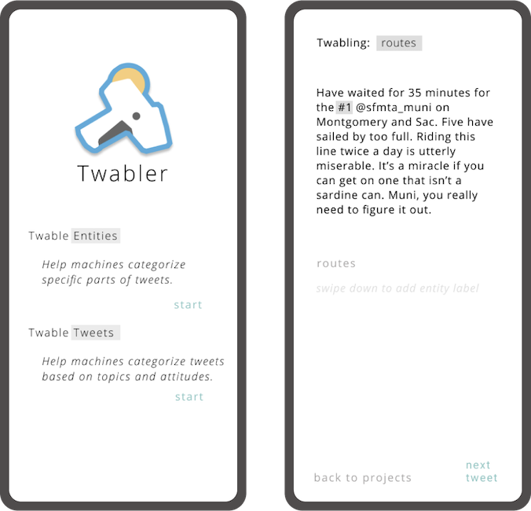

Twabler
Machine learning and NLP have a lot of potential to help researchers and other groups gather information from open forums like twitter. But some things are confusing for machines. For example: If we want to teach machines how to differentiate between muni lines and street names, we can use humans to quickly label trainer tweets.
I’ve been working with the Code for SF brigade to create a clean, fast, efficient UI for an app that can let researchers and volunteers churn through tweets.
I love this project because the team is great, and because it has taught me a lot about marrying front and backend, and challenged me to think of ways to make something like data labeling snappy and fun!
I’ve been working with the Code for SF brigade to create a clean, fast, efficient UI for an app that can let researchers and volunteers churn through tweets.
I love this project because the team is great, and because it has taught me a lot about marrying front and backend, and challenged me to think of ways to make something like data labeling snappy and fun!
Rent Cap
I’ve been working with another team at Code for SF to create a tool to help tennants understand if they are covered by new rent protections put in place by the Tennant Protection Act of 2019.
Using a flow-style survey, we use simple questions to identify if tennants are protected- or to direct them to the relevant resources if they are not.
We wanted to make the site feel warm, official, and informative- the yellow and black scheme gives it the feel of a call to action aswell!
Using a flow-style survey, we use simple questions to identify if tennants are protected- or to direct them to the relevant resources if they are not.
We wanted to make the site feel warm, official, and informative- the yellow and black scheme gives it the feel of a call to action aswell!

Firefox Replay Landing
For this project I helped my friend Jason at Firefox design a landing page for the devtool Replay. A fun project with several iterations, we finally decided on this design, which mimics the branding of the Firefox Developer Edition Landing page.
Check out the live site at: firefox-replay.com.
Check out the live site at: firefox-replay.com.